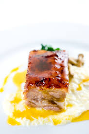
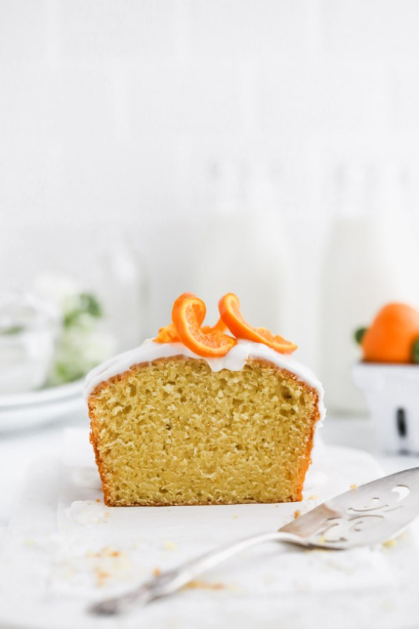
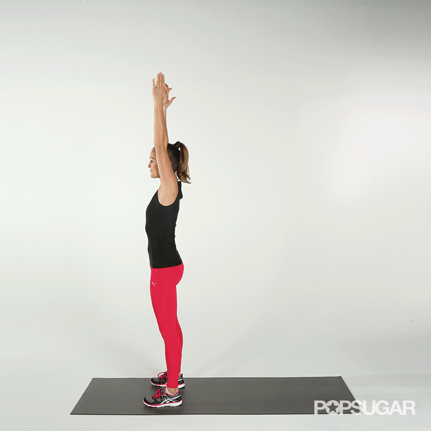

Healthy Recipes
We have 3 options for you to choose.
Our healthy recipes are for you, so if you want to live a good life and eat lunchs that are good for your body, just read this article of our webpage. We have 3 tipes of recipes in every article and we also added an exercise for you to pracise.
Whitout more hesitation, let's start with recipe number one.
Tangerine Meringue Swirls
Delicate swirls of color decorate these tender, tangerine-vanilla-flavored meringue swirls. Stunning on the table, and so tasty.

Ingredients
- 3 large egg whites room temperature
- 3/4 cup sugar
- 1/2 vanilla bean seeds scraped
- 1/4 teaspoon of cream of tartar
- Large pinch of salt
- 1 teaspoon finely grated fresh tangerine or orange zest
- Gel-paste food coloring in orange
Instrucctions
- Preheat oven to 200 degrees. Whisk egg whites and sugar together in a heatproof bowl. Add the vanilla bean seeds. Set the bowl over a pot of simmering water, and stir until sugar dissolves and mixture is warm, about 3 minutes. Add cream of tartar and salt.
- Beat with a mixer on medium-high speed until stiff, glossy peaks form and meringue is mostly cooled, about 7 minutes. Beat in zest. Check frequently to ensure the meringue is not over-beaten.
- Using a small paintbrush, paint 3 vertical stripes of food coloring inside a pastry bag fitted with a 1/2-inch round tip. Space the lines equally around the bag for most attractively striping. Carefully fill the bag with meringue, taking care to push the meringue straight down to the tip without smearing the food coloring. Pipe 1 3/4-inch circular shapes 2 inches apart on 2 parchment-lined baking sheets. As you finish piping each cookie, apply less pressure to pastry bag, and swirl the tip off in a circular motion.
- Bake the meringue cookies until crisp on the outside but still soft inside, about 1 hour 15 minutes. Remove from the oven and let set for about 10 minutes. Gently transfer the meringues to a wire rack and allow to cool completely.

Pork Belly With Tangerine-Sesame Emulsion
This recipe it's a good meel for you to try.
Ingredients
- 4 lbs pork belly
- 1/3 cup Kosher salt
- 1/3 cup sugar
- Grated zest from 8 tangerines
- 1 tablespoon rosemary, finely chopped
- 6 cups lard
Instrucctions
- Combine the kosher salt and sugar in a small bowl and add the grated zest and chopped rosemary. Rub with your fingers until the zest and rosemary is fully incorporated and the mixture is fragrant. If the pork belly still have the skin on, remove it carefully with a sharp knife.
- Rub the salt/sugar mixture all over the pork belly. Discard the excess. Place on a clean baking tray. Cover with plastic wrap and refrigerate overnight (no more than 12 hours). Preheat oven to 200’F. Put the pork belly in a dutch oven and cover with the lard; the lard should cover the pork by 1/2 to 3/4 inch. Heat the pot over low heat until it registers about 225’F. Cover, transfer to the oven and cook until the pork is meltingly tender; this will probably take 5 to 6 hours, but start checking after 4 hours. Remove the pot from the oven and let cool to room temperature.
- When cool, pour enough fat into a deep dish to just cover the belly. Cover with plastic wrap, top with a smaller baking dish and weight it down with a large can. Refrigerate overnight.
- When ready to serve, remove the belly from the fat and portion it into large cubes. Seared the belly in a large skillet, fat side down, on low heat for 15 minutes. Finish in the oven for another 15 min brushing the tangerine-sesame emulsion over it, and basting it until nicely glazed.
Glazed Tangerine Cake
The bright fresh flavor of tangerine is baked into a loaf cake and glazed with a simple, delicious tangerine icing.

Ingredients
- 1 1/2 c all purpose flour
- 2 tsp baking powder
- 1/2 tsp kosher salt
- 1 c Greek yogurt
- 1 1/4 c sugar, divided
- 3 eggs, extra large
- 2 tsp of tangerine zest
- 1/2 tsp vanilla bean paste
- 1/2 c coconut oil
- 1/3 c fresh tangerine juice
- 1 c powdered sugar
- 2 Tbs tangerine juice
Instrucctions
- Preheat your oven to 350º F and prepare an 8.5" loaf pan by placing a rectangle of parchment in the bottom of the pan and then coating with cooking spray.
- Whisk together the flour, baking powder and salt.
- In a separate bowl whisk together the yogurt, 1 c sugar, eggs, tangerine zest and vanilla bean paste.
- Stir the wet ingredients into the dry and then fold in the coconut oil until the batter comes together.
- Pour the mixture into the pan and bake for 50-55 minutes, until a cake tester comes out clean.
- Let cool in the pan 10 minutes.
- In a saucepan over medium high heat combine the tangerine juice and 1/4 c of sugar, cook until the sugar melts, about minute.
- Transfer the cake to a wire rack placed over a sheet pan and pour the tangerine syrup over the warm cake
- Cool completely
- Whisk together the powdered sugar and tangerine juice, pour over the cake, slice and serve.
- Store remaining cake in an airtight container in the refrigerator for up to 5 days
Burpees
An exercise we love to hate, burpees are a super effective whole-body move that provides great bang for your buck for cardiovascular endurance and muscle strength.
How to do Burpees?
- Start by standing upright with your feet shoulder-width apart and your arms down at your sides.
- With your hands out in front of you, start to squat down. When your hands reach the ground, pop your legs straight back into a pushup position.
- Jump your feet up to your palms by hinging at the waist. Get your feet as close to your hands as you can get, landing them outside your hands if necessary.
- Stand up straight, bringing your arms above your head and jump.
- This is one rep. Complete 3 sets of 10 reps as a beginner.
